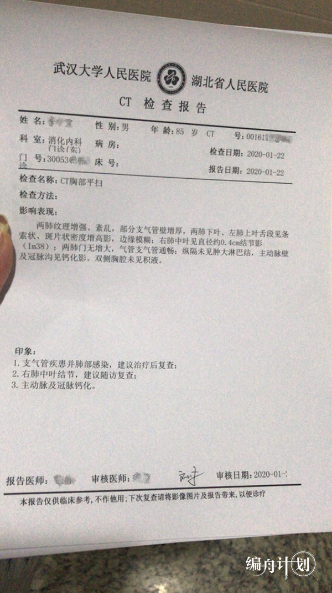
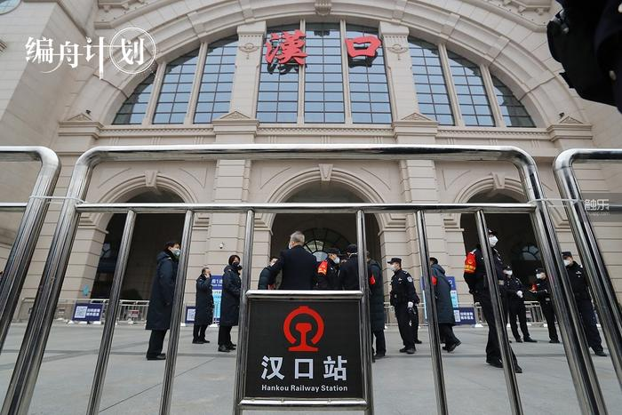
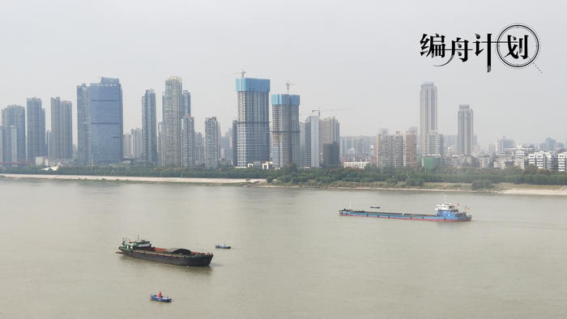
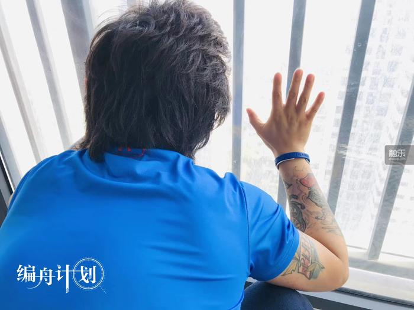

一边送餐一边拍照：我看到了最真实的武汉
原文链接 备份链接 从武汉封城之日起，三十多岁的外卖员老计一直在工作。他穿梭在江城的大街小巷，一边送餐，一边用手机记录下自己看到的一切。 空荡荡的汉街，戏台上有一只狗。沃尔玛的猪肉档人山人海，“我不敢去，也抢不过”。超市的叶子菜卖得快，去 …
这篇文章写的是武汉玩家的故事，它显然不仅仅关于游戏。游戏作为一个精神载体和文化切面，它试图讲述更大的主题：在这场灾难中，我们也有好多次得以窥见一种更本质的人，以及对人类共同命运的指向；而无论是好是坏，我们终究在各种各样的境遇里更加了解他人和自身。
_编辑_池骋2020年02月20日 17时00分
本文为今日头条“编舟计划”系列文章第14篇。 编舟计划，记录游戏与时代，只收集与游戏相关最优秀的文章。
这篇文章写的是3个武汉人的故事：在这个特殊的时期，他们过着怎样的日子，有着怎样的精神面貌，以及怎样看待游戏对于当下生活的意义。他们的故事不能代表所有的武汉人，也不能反映关于这座城市的全部，但这些真实而质朴的生活图景，令我感到珍贵。
不知道为什么，这个担子就落到了秋秋头上。
那会儿秋秋还在北京，就收到了远在武汉的爸爸吩咐：回来带爷爷去看病。
大概在一个星期前，爷爷身上出现了一些症状：咳嗽，喘不上气，食欲不振，整个人都很虚弱。对于一个90岁的老人而言，平时这点小病小痛可能算不上什么事儿，但在这个节骨眼上，秋秋就感到有点紧张。“爷爷的症状很像那个病。”她说。
1月20号，秋秋回到武汉，21号把爷爷从汉口中心城区接到相对偏远的江夏区安顿下来，22号早上8点多带他去了医院。秋秋直接挂了消化科。“呼吸科那边排的队太长了，而且爷爷当时主要的问题是吃不下东西，所以我就给他挂了消化科，但我一去就直接跟医生说，要做CT和血常规。”
这是她从网上看来的。“当时还没有核酸，网上说最重要的指标一个是血氧饱和度，一个是肺部感染的阴影，我想那就直接判断一下。”秋秋说，在当时，大多数人可能还没有这个意识，有了症状都去看呼吸科，所以爷爷的检查没有花很长时间。
当天傍晚出了结果。秋秋又跑了一趟医院，拿到了爷爷的诊断书。她看不太明白具体数字，想找个医生问问，消化科大部分医生已经下班了，只有呼吸科的医生还在加班，但排队的人实在太多。最后她找了个住院部的值班医生。“医生说他血常规是正常的，但是有肺部感染，目前不确定是不是病毒性的，感觉不太像。医生说，如果我们怀疑的话，可以第二天再去呼吸科看看。”

秋秋给我发来了爷爷的诊断书
回家以后，秋秋睡不着。爷爷倒是不太担心自己，他觉得老了反正会有各种各样的毛病，跟这次的肺炎没有关系，可秋秋怎么可能放心得下呢？爷爷身上的种种症状都很“疑似”——当时人人嘴边都挂着这个词儿，真正能够确诊的人数却很少很少。她翻来翻去地想，但也没有更好的办法。
她总是想起白天的时候跟爷爷几次穿过呼吸科就诊的人群，虽然戴了口罩，她也觉得害怕。
“在当时那个瞬间还是有一点茫然。”秋秋说，“心里想的都是，不会真的被选中了吧？”
小郑的爸爸到现在都还有点低烧。他去医院看过，检查出来与肺部感染无关，“不是那个病”，但小郑也不能完全放心。那天爸爸在社区附近的医院排队时，排在他前面的一个老太太被诊出高度疑似，没有核酸试剂确诊不了。后来，住在隔壁小区的舅舅告诉他，他们的业主群里有人发了一条求助信息，说是有个老太太已经快不行了，拖了一个多星期还没有排上核酸试剂。小郑感到后怕，那个老太太和爸爸在同一天去了同一家医院。
“会不会就是同一个人？”小郑心里也打鼓，但他知道这事儿没法弄明白，“可能也不是吧，说不清了，说不清了。”
小郑在地铁工作，1月23号是他年前最后一个出勤的日子，他像往常一样凌晨4点醒来，看了看手机，发现有个朋友在夜里给他发了条消息，问他是不是要放假了，还传了一张网上的截图给他。
他不太相信，到了点就照常去车辆段的派班室出勤。刚到那儿，班组长就问他，消息收到了没有。他说收到了。班组长说，现在问题可能比较严重了，没什么事情你就不要去外地了，自己注意一下。
小郑觉得自己被一个巨大的噩耗砸中了。“那话听了我就难受……我当时还以为过了这几天就完事儿了，我本来想的是初一、初二就在家里，初三、初四正常上班，过几天再去我女朋友那边，还跟朋友约了泡温泉……看这样子就不太现实了。”
这最后一天上班，一切都跟平时一样。“检车，然后把车开出来正常运营。”小郑跟我说，“其实那两天就没什么人坐车了，站内冷冷清清。”
那天的工作结束得特别早。上午8点他就下班回家了。上午10点，武汉轨道交通各条线路最后一趟车从各起点站发出，到达终点站后结束运营，所有车站出入口拉下了卷帘门。

1月23日起至今，武汉实行交通管制
许多人赶在最后一刻离开了武汉，秋秋的爸爸是其中之一。他与秋秋的妈妈离婚后，和另一个阿姨组建了新的家庭，阿姨还带了个比秋秋大一些的姐姐。23号上午10点多，秋秋的爸爸在高速上的服务站里给她打电话，告诉她，他们3个人赶在封城前一个小时出了城，这会儿已经快到岳阳了。
秋秋的爸爸倒不是自己要跑，而是为了把在上海工作的姐姐给送回去。“姐姐知道了交通管制的消息就比较激动，怕之后回不去，他们就赶在10点前把姐姐送出去了。”秋秋告诉我，他们打算在岳阳把姐姐送上回上海的飞机，在那里住两个晚上，之后再回武汉。
在电话的那一头，爸爸听上去特别开心的样子，“情绪很高昂”。打这个电话主要是想告诉她，他和阿姨两个人打算留在岳阳过年，不能去爷爷奶奶家跟她一块吃年饭了。
秋秋当时整个人都懵了。那天早上她一直不停地接电话：“我妈妈的，我闺蜜的，我同学的，还有我老板的。因为看到了交通管制的消息，他们都轮番打电话过来问我怎么样，一直到10点多钟接到我爸的电话……你能懂那种很懵的心情吗？就是其他所有人，可能没有血缘关系的人都在关心你的时候，你的亲人给你打了一个这样的电话。”
其实她在凌晨就已经看到了消息，裹着大衣坐在沙发上想了一夜，最后决定留在武汉。“虽然当时有高铁、有飞机，10点前是可以走的，但我走了爷爷奶奶怎么办？我万一是潜在的感染者怎么办？”她也没考虑过让爸爸把她送出城，但“我对他过于了解，我觉得这件事不足以让他从睡眠中起来，帮我解决……我也不愿意求他，你知道的，就想保有一点可笑的话语权和底气”。
“北京那边，哪怕回不去也就不回去了。”秋秋说，“但爸爸没有问过我。”
挂了电话以后，她把爸爸拉黑了。

在施行交通管制的当天，很多人离开了武汉，同时也有很多人感到自己“被抛下”
与20出头的秋秋和小郑相比，39岁的石磊在疫情中的样子更像一个大人。
在石磊看来，越是在这样的关头，恐慌和害怕之类的情绪越没有什么用。“我恰恰觉得这个时候要冷静理性地去看待这个事情。”石磊说，“第一，做好自己和家人的保护；第二，努力去做一些科普；第三，做一些力所能及的事情。”
这其中包括作为志愿者司机接送上下班的医护人员。石磊那几天常常经过长江大桥、长江二桥、二七桥等几条主要的过江通道，每一次他都会在桥上看到穿着白大褂的医护人员在奋力地蹬着共享单车。
那几天武汉特别冷，最低气温达到零度以下。江面上风又大，吹在脸上跟刀刮似的。虽然桥都不长，开车一两分钟就过去了，“但是蹬自行车可能要小20分钟”，石磊说。
在全市公共交通停运后，这样的场景就成了寻常事。“据我所知，大量的医护人员要么就是在医院待着不走，要么就是家里有事必须来回跑的，除了蹬共享单车，还有人靠脚走十几公里回家。”
石磊想帮这个忙。在公共交通停运的当天晚上，他恰好在朋友圈里看到志愿者招募启事，就进了其中一个群——这个群建得早，群里有司机，有医护，还有一些其他公益机构的。后来建起来的群大致分为医护群和司机群，组织者在医护群里搜集整合了出行需求后，再分发到各个司机群里。司机群也分得更细了，有按照区域分的，也有按照开车距离分的；接送的也不只是医护人员，也有接送警察的，也有运送物资的。
所有的工作全都靠微信群进行线上沟通和协调。石磊看到，“每天群里的单子都在不停地滚动”。自从加入志愿者团队后，石磊每天差不多都会跑个两三趟。他说这在司机群里并不算多。“我知道有个司机一天跑掉了一箱油，少说也得有500公里。”
“按你的估计，一个志愿者要负责对接多少个医护人员才够？”我问。
“永远都不够。”石磊说。

石磊有时会在清晨出去接送
在机动车限行令颁布后，石磊没有收到通知短信，于是照常接单。他在路上碰到过两次警察，有一次医生正好就坐在他的后座上。虽然有令在前，警察劝他“尽量还是回去”，但警察也知道他为什么会出来。“警察的态度都很好，还给我敬了个礼。”
石磊感慨说，在这次疫情中令他印象最深的一点是，无论是警察还是环卫工人，无论是外卖小哥还是渣土车司机，“所有留守在一线的人都很好，相互都很支持”。包括后来他的小区业主群里组织团购食品和日用品时，他注意到很多年轻人都在出力，“给大家买菜、买药啦，团购各种物资啦，也会给物业人员捐赠一些，有的还直接去帮物业做事儿”。他有时候会跟这些年轻人聊起来，他们说自己平时也玩儿游戏，“但这段时间就没有什么精力和兴致去玩了，想要做点力所能及的事情”。
虽然处在特殊时期，石磊一直都在尽力地维持平常的生活秩序。他的小区旁边有一条顶级的绿道，平日里隔一天就会跑一次；就算在疫情期间，他也坚持两三天跑一次，一次跑上10公里左右。
最近他的烦恼是，武汉所有小区都实行了封闭式管理，他的跑步计划也中断了。
“通俗一点讲就是，我人麻了。”小郑向我形容他这段日子的生活，“没有感情，没有痛觉，也不想动弹。每天活着都是靠惯性。今天的你还没有过完，你就能想到明天的你还是这鸟样。”
这种感觉和平日里上班是不同的。虽然也是日复一日地生活，但小郑觉得，“现在年轻人还不得给自己找点乐子，是吧？”在这样的特殊时期，平日里习以为常的小乐子就显得尤其珍贵了。“上班的时候想着下班去干啥，放假的时候又会去想放假的时候干啥，过节的时候奖励一下自己，想想我有什么想买的，就是这种很琐碎的细节。但这会儿完全没有了，完全不会去思考这些东西，平常看来是很普通的想法，在这个时候都消失了。”
“如果说我是个创作者的话，画画的，写小说的，我现在一定陷入枯竭状态了，脑子里什么都没有。”小郑说。
自从疫情爆发，小郑就没离开过电脑。刚回到家里头两天，他还尝试了一些新游戏，但后来对主机游戏就有点不耐烦了。“原来玩主机的时候是那种比较惬意的状态，现在天天闷在家里，心里压着个事儿，感觉又有点抑郁，最渴望的其实是社交。”
在家里的时间实在难熬，和朋友一起玩游戏就成了一个打发时间的方法——或许也不是最好的方法，但除此以外还能做什么呢？他玩《剑网叁》，玩《最终幻想14》，玩一些暴雪的游戏，基本上都是和朋友一起开黑，每天玩上十几个小时，“但实际上在玩的过程中也没有太多交流”。
小郑的心情很复杂。他需要线上游戏来维持一定程度的社交，但有的时候又想要避免与人交流。“在线上游戏中还是会遇到一些关于疫情的负面消息，某个人的同学得了病老是不好，某个人那边又有了什么新情况。”这些线上的伙伴们大多都来自四川、浙江等省份，“大家都是我周围的人”，小郑告诉我，这会让他感到有些压抑。

一些人的生活有了翻天覆地的变化，大多数人的生活其实没有太多波澜——但他们也有自己的问题
他在游戏里遇到的湖北人普遍比较沉默。“包括我以前打的一个固定团，这一个团里全是湖北人。大家能聊什么呢？我们都闭口不言。”小郑说，“这个我们是很有默契的，都不聊。”
小郑也从来不在游戏里跟人聊关于疫情的事情。“玩游戏是为了排解一下心情，刻意地去聊这些，让自己心情沉重，那不是自相矛盾吗？”小郑说，“虽然心里总会搁着点什么东西，但我也不想给别人造成负面情绪，让外面的人觉得武汉人怎么样，觉得我可怜。我也不想干这种事。”
所以，当游戏里的伙伴们问起时，他就告诉他们都挺好的。家里人没事，他自己也没事，相信很快会好起来。
他现在每天还是在游戏上花很长时间，但最大的问题是，游戏也不再能够令他感到高兴了。“越来越难受了。”小郑说，“最开始的时候还有一点点这种想法，觉得多出很多时间来玩游戏还不错，但其实更多的是难受。”
对现在的小郑来说，游戏不再是一个休闲娱乐的选择，反倒像是日常生活的填充物，毕竟不干这个也干不了别的。在游戏中他也很少能感受到什么情感波动。“还是有那么一丢丢感觉的，只是没那么容易感到开心了。”
他觉得自己这样也不算辛苦。“毕竟很多人也都是这么过的。像那些没有电脑的人，他们怎么过的呢？还不是一样过。”小郑告诉我，他在网上看到一个大妈自己跟自己打麻将，一个人打4个角，还要算哪一边赢了钱，哪一边输了钱。“不要以为这是段子，是真的有人这么去做的，不也过得挺好的？”
“那你不觉得这反而像是……太寂寞的状态吗？”我问。
“完不了的，人怎么可能这么就疯了？人要是这么简单就疯了的话，那人早就没了。”小郑笑着对我说，“人类可太会了。”
“我现在觉得难受，也是我一时接受不了。等我能接受了，那又是另一番天地了。”小郑说，“主要是不接受还能咋地？日子总是要过的，你说这有啥用。”
“想过以后的时间要怎么打发吗？”我问。
“换个游戏。”小郑说。
自从22号那天带爷爷去看病后，秋秋就再也没有出过门。当时她从医院拿了一些抗生素，但爷爷不太听话，不把这个病放在心上，药也没怎么吃。万幸的是，爷爷在一个星期后自个儿就逐渐好了起来。秋秋这才松了口气。
“虽然爷爷最后不是这个病，但你会有种感觉吧，致死率面前亲情算什么。”秋秋回想起当时爸爸吩咐她带爷爷去看病的事，语气很平静，“我想我爸当时可能有那么一瞬间觉得爷爷是这个病，他就不想带他去医院，等我回来让我带他去。”
“我爸是有车的，其实最好的办法就是他直接带爷爷去看病，就不用我各种折腾。就算不在汉口看，开车到江夏也可以，但我爸可能觉得汉口跑到江夏去太远了吧，他懒得去。”秋秋说，“我爸是那种比较自我的人，他怎么舒服怎么来。”
她感到自己虽然在疫区，却也不算是风暴的中心。最强烈的真实感可能来自小区里的高音喇叭，它每天用武汉口音循环播放：“重要的事情说三遍！不要出门！不要出门！不要出门！”
秋秋告诉我，她感到自己的四周正在上演一出戏。外面的人可能会把武汉看作是一个整体，但其实身处其中的每个个体的命运有着天壤之别。跟那些真正遭遇了不幸的人相比，秋秋觉得自己“连个炮灰也算不上，可能就是跑过去，镜头晃过一秒钟”。
“你就会想，这到底是真的吗？已经这样了吗？”秋秋说。

最近发生的事情令秋秋感到没有真实感
因为事先没有预料到会在武汉待上这么长时间，秋秋只带了一个MacBook回去，想着可以拿来写点东西，放放音乐，“里头没有任何游戏”。意外地留在了武汉以后，她的生活变得有点空虚。爷爷奶奶家里也没有Wi-Fi，她就只能玩玩手游，每天登录上去做一下日常。
“一般情况下，我吃完了早饭以后就开始玩游戏，看看有什么能玩的……但是也没有什么特别能玩的。”秋秋说，“你也知道手游很多时候做完了日常就没有什么可以做的，日常的任务也不是很花时间，我也不是那种很‘肝’的人。”
她有时候会不自觉地将周围发生的事情跟游戏里的体验联系在一起。“我会比平时急一点，比如以前抽卡比较随缘，但现在如果抽得稀烂，或者十连很’非’，我就会觉得，啊，就是这样啊，现在的环境都很差，武汉这个事情就已经很难过了，或许这段时间的运气就是不好吧。”
秋秋说：“感觉自己现在会比较相信命运这个东西了。”她觉得在这个特殊时期，游戏的意义也与平时有了一些不同。“在对未来不太确定的时候，游戏是一个有既定规则的世界，一个有付出就能够得到回报的世界。”
在没有太多游戏可玩的日子里，秋秋最常用的缓解压力办法是看小说，但随着宅家的时间越来越长，这个办法也不再那么有用。在北京的时候，她觉得自己还是蛮喜欢宅的那种人。“宅的前提是我不会觉得身体上有什么不适，但武汉这几天太冷了，家里又没有暖气……”秋秋告诉我，在大白天她甚至不能躺在床上，“因为爷爷奶奶会觉得没有到睡觉的时间就不能上床”。
在这样的家庭生活中，她会觉得很多时候心态没什么用。“就算心态崩了，也不会有太多人来关心。尤其是我的家人，他们的亲情不会到关心我的心理状态这个层面。所以，我的心态一直都是那种，明明心里已经慌得不行了，表面上依然很镇定。”她告诉我，如果她在家人面前表现出慌张或者压抑的情绪，家人只会觉得，“你是不是想太多了”。
有的时候，她会觉得自己的周围和外面的世界以及网络上的世界是割裂的。她告诉我，她有个朋友家住在汉口靠近市中心的位置，“每天晚上都会听到车来车往，警车、消防车、救护车、大货车，各种各样的声音”。而她住在郊区，每天从早到晚都很安静，只是偶尔能听到飞机飞过头顶。
至于网络上的东西，她也觉得心情复杂得很。一方面，她觉得那是放大了的悲伤，“消化这些事情真的比较难”，另一方面，她明确地知道，这个城市有很多人都在跟痛苦打交道，她也会觉得有一点点庆幸，至少目前她和家人都躲过了一劫。
在这样的环境中，她感到格外孤独，“但我没有办法”。她只等着疫情结束，先跟武汉的闺蜜约一个海底捞，“一起抱头痛哭一场”，然后赶紧回到北京，把台式电脑打开玩游戏。
“让我充钱！让我充钱！”秋秋说。

秋秋的朋友给她发来下雪的北京
石磊曾经是《家用电脑与游戏》的编辑，也是个老玩家，平日里每天固定打上两三个小时的游戏。但在疫情爆发后，他迅速地失去了玩游戏的兴致。他什么游戏机都有，每天只是挨个打开看一眼。偶尔进游戏里漫无目的地转一转，或者在各个游戏机的商店里看看有什么在打折，但什么也没有买。
“不太能集中注意力，也不知道玩什么。”石磊告诉我，他之前喜欢玩赛车游戏，在家里坐着玩，戴着耳机，很多时候还会戴上一个赛车头盔，游戏体验很棒。“但你说让我现在去玩，我完全没有信心。我不可能不去想现在周围的事情，我也没有办法告诉自己不去想。”
他在PS4上很喜欢的游戏是《最后生还者》，平时没事的时候也会拿出来玩一玩。自从疫情开始，他就很不愿意玩这个游戏了。“其实是个特别应景的游戏，本身讲的是一个与传染病相关的故事，讨论很多人性上的问题……但我现在每天都在经历过山车一样的体验啊。”石磊说，“所以心理上有点抗拒，不愿意再虐自己。”
另一个现实的问题是，疫情改变了他的生活常态。没有疫情的时候，不想做饭就可以出去吃，但他现在每天到了点了就得做饭。“我需要照顾我的家人，我不能让玩游戏影响我做饭。”石磊说。很显然，每天花在游戏上的时间就少了。
他将这些内容都分享在朋友圈和微博上。“我也不觉得我的生活方式就是最好的，但至少是真实的。”他说，“武汉是什么样，我就给大家看是什么样。如果有人在关注我的微博的话，我想让他们看到疫区里有一种生活是这个样子，让他们获得一些安慰。”

石磊的小区封闭式管理后，业主和物业联合起来搞物资团购，他说他这几天的爱好变成了“蹲阳台上等待投喂”
“我相信大家肯定不愿意看到一个水深火热的武汉，我也相信大家肯定不愿意看到一个只有医院和求助信息的武汉。”石磊说，“那些求助信息或许都是真的，但我还是想说，哪怕武汉有很多人在求助，还是有更多的人过着平凡的生活，我不希望剩下的这些人被情绪所主导。”
然而，无论如何调节，身处疫区中心的人们一定有着不同程度的情绪问题。目前人们更关心具体事务的进展，包括物资、交通、设施等等，但他们在这段时间里积累下来的心理问题也是不容忽视的，在这些事情告一段落之后，可能会是一个需要漫长的时间才能愈合的疮口。石磊也并不否认这一点。他告诉我，“现在武汉人肯定大面积存在着心理疾病”，因此，他也会有选择性地去看一些比较积极的新闻。
“如果我每天还去看那些悲惨的新闻，我觉得人早就崩溃了吧。再坚强的人也崩溃了。”石磊说，“绝望有用吗？我告诉你，这就是事实，绝望没有用的。如果你有一种绝望的情绪，你接下来要做什么？要么你去加入它、改变它，要么你就离开它。你最需要做的是让自己变得强大起来，让自己身边的人，让你爱的人或者爱你的人过得更好。”
石磊在朋友圈里写道，“最近20天估计把未来人生所有的眼泪都流完了”。我问他是为了什么流的泪，他回答得很快，“是感动，不是伤心”。他说这段时间里他最大的感受是，每一个独立的个体都在努力地生存，甚至在给予别人力所能及的帮助，他更多地看到——或者他更愿意看到那些“人性的光辉”。
前两天，石磊发了一张从家里的阳台望出去的晴朗天空，他写道，“风雪之后也总有晴天，今天开始慢慢有心情能玩会儿游戏了”。我记得他不久以前还有个说法，“生活是什么样的，取决于你怎么选择去生活”。
我相信他是一个对生活拥有掌控感的人，或者至少是这样追求的。他告诉我，“在生活中肯定会遇到很多很糟糕的事情，这是一定会的，如果你天天觉得自己很糟糕，你就会不断地遇到很多糟糕的事情。所以，你不如无视这些糟糕的人和事，你可能反而会高兴一点。”在这场疫情的影响下，他变得更有意识地去寻找生活中的笑点和值得开心的事情。

石磊常常拍下从家里往外看的风景，他说“一天比一天美”
灾难给人带来不幸，灾难也给人带来成全。当石磊跟我讲起他如何被坚守的基层人员打动，如何对这个社会产生更多的情感和包容时，我倒想起《倾城之恋》的故事。最后那一对情人正是因为灾难才得以结合，可我不觉得那是人性的光辉，反倒是跟“人”的本质相关。张爱玲是这么写的，“在这动荡的世界里，钱财、地产、天长地久的一切，全不可靠了。靠得住的只有她腔子里的这口气，还有睡在她身边的这个人”。
不知道为什么，在写这篇文章的过程中，我的脑海里总是浮现出那只深夜狂奔在汉口二环高架桥上的野猪。这只野猪不知道自己要去哪儿，也不知道前方有什么在等待着它，只是一个劲儿地奔跑。这个场景击中了很多人的泪点，我想这种情绪绝不只是与武汉当下正在面临的困境有关，而是人们在这个小东西的身上体会到一种更底层、更普遍的感伤。
这篇文章写的是武汉玩家的故事，它显然不仅仅关于游戏。游戏作为一个精神载体和文化切面，它试图讲述更大的主题：在这场灾难中，我们也有好多次得以窥见一种更本质的人，以及对人类共同命运的指向；而无论是好是坏，我们终究在各种各样的境遇里更加了解他人和自身。
（本文由今日头条游戏频道“编舟计划”独家支持，今日头条首发。点击访问编舟计划，用文字将游戏与时代编织相结。每周一篇，敬请期待。未经授权，内容不得转载。）
原文链接 备份链接 从武汉封城之日起，三十多岁的外卖员老计一直在工作。他穿梭在江城的大街小巷，一边送餐，一边用手机记录下自己看到的一切。 空荡荡的汉街，戏台上有一只狗。沃尔玛的猪肉档人山人海，“我不敢去，也抢不过”。超市的叶子菜卖得快，去 …
原文链接 备份链接 到2月7日， 武汉已经封城16天了， 一条辗转联系上了身在武汉的救援志愿者李雄， 通过他的叙述， 了解武汉的千万民众，日常生活到底如何？ 李雄 李雄本身是一个小企业主，财务自由， 去年10月，他加入了蓝天救援队， …
原文链接 备份链接 一周多前小南发起了一场征集——“疫情过后你最想做的一件事”,得到了读者朋友们的积极参与。下文是00后武汉大学生薛珂发来的一篇自述。 文 | 薛珂 编辑 | 小豆 出生于2000年，今年虚岁20，我是武汉华中科技大学的一 …
原文链接 备份链接 2月19日。晴。 自从我一个月前离开武汉，对困守武汉的朋友，真的是“不忍相问”。我楼下的邻居，一家七人（四个大人三个孩子，最小的孩子才半岁），自20号至今，没出过门一步，我从不敢问他们生活的细节。他们在承担种种重厄，而 …
原文链接 备份链接 文｜西答 这几天，阳光洒满了湾区。太平洋那边，扬子江畔的武汉这几日依然湿冷，天气预报说今明两天降水概率50%。 “我们是1月14号从湖北回到湾区的，这也过去三周多了。”大J是湾区某高科技公司的软件工程师，俗称高级“码 …